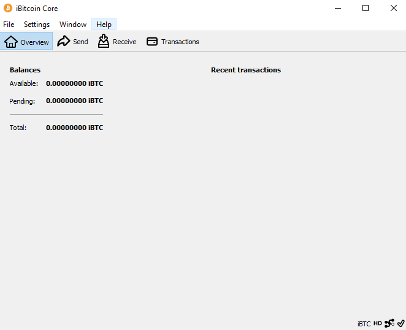
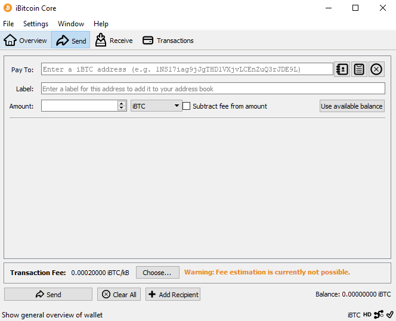
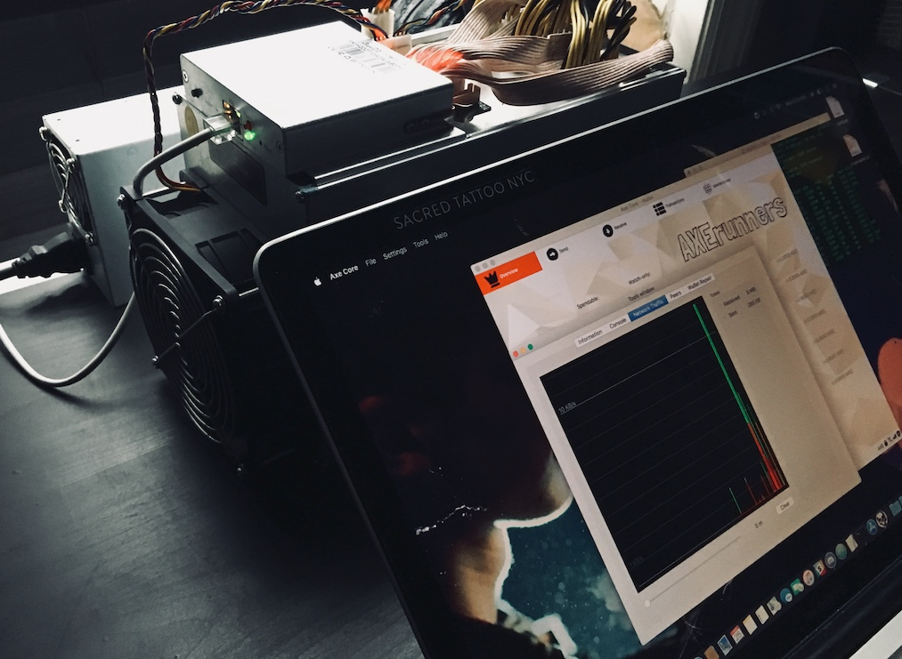

iBTC aims to be a more decentralized version of Bitcoin. This is accomplished using Satoshi's Missing Link - VBR Decentralization Algorithm. The Variable Block Reward (VBR) feature is the engine behind promoting more decentralization.
Specifications
algorithm: sha256
ticker: iBTC
prefix: 1, 3
supply: 84000000
maturity: 101
confirmations: 6
spacing: 2.5 min
difficulty: LWMA
block size: 1MB
port: 7333
rpc port: 9332
InstantSend
Allows for near-instant transactions. iBTC InstantSend transactions are fully confirmed.
GUI

ibtc-Qt v0.19.1 on Ubuntu 19 
iBTC Electrum v3.3.8.2 on Ubuntu 19
Use iBTC aims to be a more decentralized version of Bitcoin. Vagrant and VirtualBox with Ansible. This section covers build process on macOS (linux instructions). Gitian provides a way to be reasonably certain that the AXE executables are really built from the exact source on GitHub and have not been tampered with. It also makes sure that the same, tested dependencies are used and statically built into the executable.
Multiple developers build from source code by following a specific descriptor ("recipe"), cryptographically sign the result, and upload the resulting signature. These results are compared and only if they match is the build is accepted.
GnuPG
Download and install the latest version of GPG Suite from here.
Vagrant
Download and install the latest version of Vagrant from here.
VirtualBoX
Download and install the latest version of VirtualBox from here.
git clone https://github.com/NullFunctor/iBTC.git
cd IBTC-gitian
Edit your gitian.yml file:
# URL of repository containing iBTC source code.
ibtc_git_repo_url: 'https://github.com/NullFunctor/iBTC'
# Specific tag or branch you want to build.
IBTC_version: 'master'
# The [email protected] in the e-mail address of your GPG key, alternatively a key ID.
gpg_key_name: 'F16219F4C23F91112E9C734A8DFCBF8E5A4D8019'
# OPTIONAL set to import your SSH key into the VM. Example: id_rsa, id_ed25519. Assumed to reside in ~/.ssh
ssh_key_name: ''
Place Apple SDK tarball (MacOSX10.11.sdk.tar.gz) into axe-gitian folder for macOS builds.
Start the build with vagrant up --provision IBTC-build.
Then connect to the box with vagrant ssh IBTC-build.
Prepare the container and start building with:
#replace $SIGNER and $VERSION to match your gitian.yml
Commit assertions from the box using git (access token might be needed) or use vagrant scpplugin to transfer data.
iBTC Electrum is a lightweight client for iBTC network. Check with AXE wiki for more details. The source code is available at @AXErunners' GitHub repository.
Axe Electrum on Ubuntu 19
Usage
Download binaries or follow this guide to install Axe Electrum from source on your system.
electrumx
ElectrumX is a server-side application for iBTC SPV protocol. The current version requires precise system configuration and is not fully automated for fast deployment. The script below is used for fast and easy setup of electrumx server on working AXE core node.
To start, input following line:
Finish the configuration by adding your iBTC node's RPC login/pass in DAEMON_URL as user:[email protected]:/
Sample:
# REQUIRED
DB_DIRECTORY = /db
# iBTC node RPC credentials
DAEMON_URL = axerunner:[email protected]:9337/
DB_ENGINE=rocksdb
SSL_CERTFILE=/etc/electrumx/server.crt
SSL_KEYFILE=/etc/electrumx/server.key
TCP_PORT=50001
SSL_PORT=50002
# Listen on all interfaces:
HOST=91.65.291.42
COIN=iBTC
#BANNER_FILE = /etc/electrumx/electrum.banner
#Uncomment the above line if you want to have a banner and create the banner file
Add the ports in the firewall exception:
sudo ufw allow 50001
sudo ufw allow 50002
Launch
Starting and stopping electrumx server service electrumx start service electrumx start
mining

Create iBTC address to receive payments
Download the iBTC core, iBTC Electrum or mobile client. Generate a new address to receive payments from the mining operation.
SHA256
Connect to your SHA256 miner and enter values according to the following sample:
Url: POOLADDRESS:PORT
Worker: WALLETADDRESS
Password: X
Use p2pool-scanner to find the best pool for your operations.
p2pool
Requirements:
axed >= 1.4.0.2
Python >= 2.7
Twisted >= 13.0.0
Zope.interface >= 3.8.0
Automatic deployment
Create user axerunner:
adduser axerunner && usermod -aG sudo axerunner
su axerunner
Download and prepare deployment script:
cd ~
git clone https://github.com/axerunners/p2pool-axe-deploy
nano ./p2pool-axe-deploy/p2pool.deploy.sh
Edit the script to match your setup:
PUBLIC_IP your public IP address
EMAIL your email address
PAYOUT_ADDRESS your IBTC wallet address to receive fees
USER_NAME linux user name
RPCUSER enter a random alphanumeric rpc user name
RPCPASSWORD enter a random alphanumeric rpc password
Start deployment script:
bash ./p2pool-ibtc-deploy/p2pool.deploy.sh
Manual deployment
After installing iBTC core, open ports for p2pool: